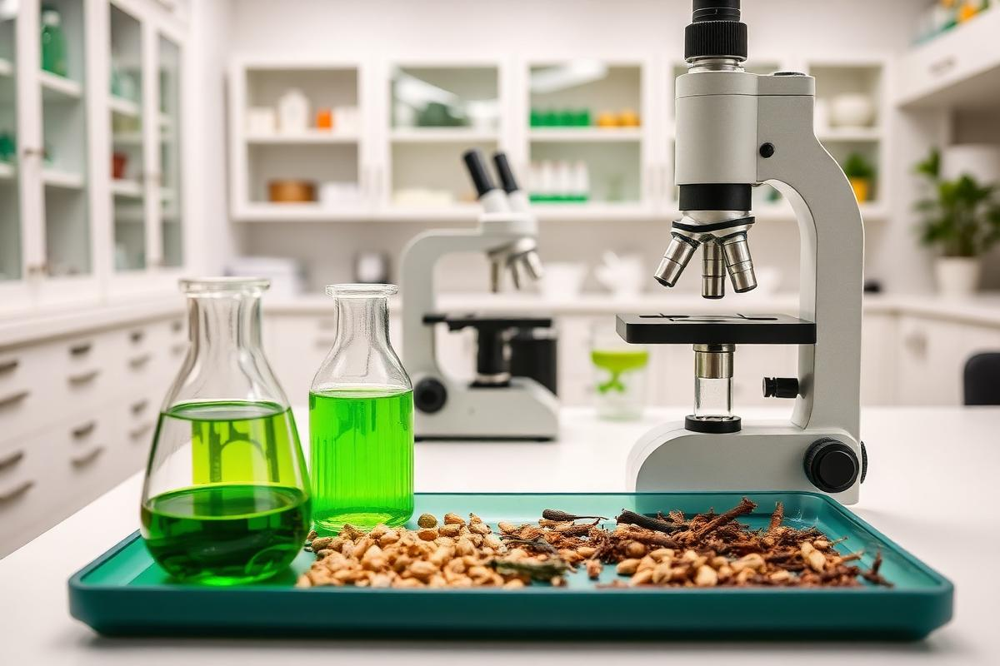

Siddha Research — Cancer, Male Infertility & Deva Chooranam
Siddha Research & Clinical Trials
Scientific documentation, safety profiling and adjuvant clinical studies evaluating classical Siddha formulations in chronic illnesses.
Siddha supportive care in cancer
Protocols designed to run alongside oncology treatment — targeting chemotherapy-related fatigue, nausea, mucositis, appetite loss and immunity decline, with careful attention to drug interactions.
- Symptom-led herbal and dietary regimens
- Quality-of-life and performance-status tracking
- Coordination with the patient's oncology team
Male infertility management
Siddha management of oligospermia, asthenozoospermia and related reproductive concerns, combining internal medicines, kayakalpa principles, lifestyle correction and semen-analysis follow-up.
- Baseline and repeat semen analysis review
- Stress, sleep and metabolic-factor correction
- Couple counselling and treatment-cycle planning
Deva Chooranam for people living with HIV
A classical Siddha polyherbal chooranam studied as an adjuvant to antiretroviral therapy. Observations focus on CD4 trends, body weight, appetite, energy, skin and gastrointestinal complaints, and the frequency of opportunistic infections.
- Standardised raw-drug sourcing and preparation
- Structured case documentation and periodic lab review
- Emphasis on nutrition, counselling and ART adherence

Methodology
How the work is conducted
Research at the foundation follows a simple discipline: authentic drugs, honest records, measurable outcomes.
Case documentation
Every patient enrolled in a study is documented with structured proformas and consent.
Drug standardisation
Raw drugs are authenticated and formulations prepared to consistent, reproducible standards.
Objective follow-up
Laboratory parameters and validated quality-of-life scales guide outcome assessment.